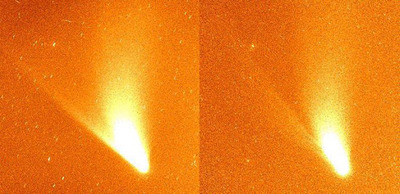

Also called the ‘sodium tail’, the existence of the neutral tail was confirmed through observations of comet Hale Bopp in 1997. Prior to this, neutral sodium atoms had been primarily observed in the coma, and so the 50 million km long, 600,000 km wide tail was quite a discovery!

Credit: Isaac Newton Group/La Palma
The source of the sodium atoms and how the neutral tail forms is still a matter of debate. One idea is that the sodium atoms are formed in the coma and pushed out into the neutral tail through radiation pressure. The neutral tail is therefore formed in a similar way to the dust tail, an idea that is supported by the location of the neutral tail between the dust tail and the gas tail.
An alternate idea is that the sodium atoms are created in situ in the tail through either collisions between dust grains or the bombardment of the dust grains with ultraviolet light from the Sun. This releases the sodium atoms in a process called sputtering.
The neutral tail shines due to fluorescence, by absorbing solar photons and re-emitting them at 5,890 angstroms as the sodium atom de-excites.